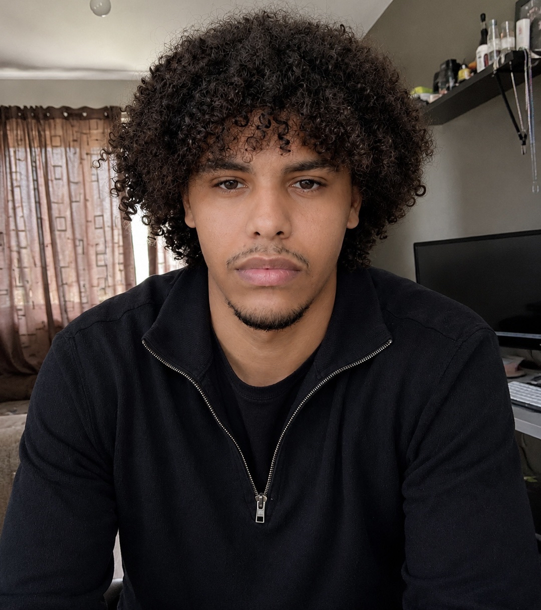

Birmingham, United Kingdom
Malaki Amanuel
Psychology graduate seeking roles in psychology, data and analysis, HR and mental health.
I work across the whole analysis workflow: study design, power calculations, cleaning, hypothesis testing and reporting, using JASP, SQL, R and Excel. I also coach secondary students and have supported a digital health startup with market modelling.
Explore by roleChoose a path to see my most relevant work
Research and projects
Select a card to open the full study.
Experience
Select a role to see what I did.
Skills and tools
Statistics, databases, spreadsheets and research practice.
Education
2:1
BSc (Hons) Psychology
Keele University, 2023 to 2025
Modules
Statistics for PsychologyAdvanced Research MethodsPsychometrics and Experimental DesignScience CommunicationCyberpsychology
Methods
Hypothesis testingG*Power sample sizest-testsANOVAMultiple regressionEffect sizesAPA reporting
A Levels
A*Psychology
A*Sports Science
AArt
GCSEs
7English Language
7Business Studies
7Sports Science
6Mathematics
8 GCSEs in total.

MA
Open to data analysis, quantitative research and research operations roles
On-site, hybrid or remote. Email or phone is the quickest way to reach me.
Emailmalakiamanuelofficial@gmail.com
Phone07384 221139
LocationBirmingham, West Midlands, UK
LanguagesEnglish (native), Tigrinya (fluent)